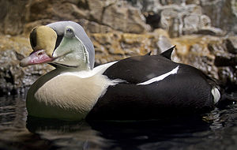
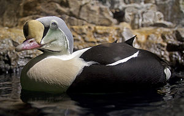

| King Eider | |
|---|---|
|  | |
| Male at Central Park Zoo, New York, USA | |
| Conservation status | |
| Binomial name | |
| Somateria spectabilis (Linnaeus, 1758) |
| King Eider | |
|---|---|
|  | |
| Male at Central Park Zoo, New York, USA | |
| Conservation status | |
| Binomial name | |
| Somateria spectabilis (Linnaeus, 1758) |
The King Eider (Somateria spectabilis) is a large sea duck, which breeds along northern hemisphere Arctic coasts of northeast Europe, North America and Asia. The birds spend most of the year in coastal marine ecosystems at high latitudes, and migrate to Arctic tundra to breed in June and July. They lay 4-7 eggs in a scrape on the ground lined with grass and down.
King Eider winters in arctic and subarctic marine areas, most notably in the Bering Sea, the west coast of Greenland, eastern Canada and northern Norway. It also occurs annually off the northeastern United States, Scotland and Kamchatka. Breeding areas include the Arctic coastal tundra of the north coast of Alaska. This species dives for benthic invertebrates like crustaceans, polychaete worms, and molluscs, with mussels being a favoured food. Wintering birds can form large flocks on suitable coastal waters, with some flocks exceeding 100,000 birds.
This species is smaller than Common Eider. The male is unmistakable with its black body, white breast and multicoloured head. The drake's call is a deep cooing.
The female (occasionally colloquially referred to as a "Queen Eider"[2]) is a brown bird, but can still be readily distinguished from all ducks except other eider species on size and structure. The head is shorter than in Common Eider, and the feathering extension onto the bill is rounded, not triangular in shape.
Immature drakes are typically all dark with a white breast and a yellow bill patch. Eclipse adult drakes are similar but lack the white breast.
The King Eider is one of the species to which the Agreement on the Conservation of African-Eurasian Migratory Waterbirds (AEWA) applies.

{kind=link}